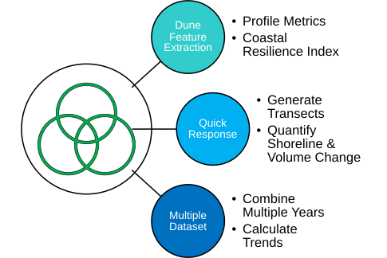
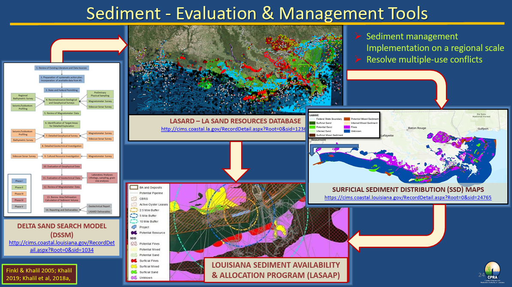
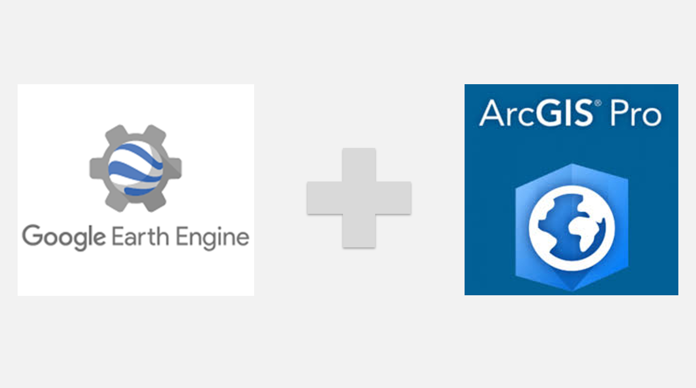

Repetitive analysis consumes expert time
Recurring GIS tasks, QA checks, reporting steps, and data preparation routines slow down teams that should be focused on interpretation.
Geospatial automation for technical teams
Tellus helps engineering firms, government agencies, geospatial teams, and research organizations turn manual analysis, legacy code, and fragmented spatial data into automated, cloud-ready, AI-enabled systems.
Spatial datasets, legacy scripts, desktop GIS, models, reports
Python, ArcGIS, Earth Engine, cloud analytics, validation logic
Repeatable tools, dashboards, QA, prioritization, operational insight
The challenge
Tellus focuses on the operational middle ground where GIS expertise, scientific computing, data engineering, and applied AI need to work together.
Recurring GIS tasks, QA checks, reporting steps, and data preparation routines slow down teams that should be focused on interpretation.
FORTRAN, MATLAB, desktop scripts, and one-off models often carry valuable logic without a clear path into modern operations.
LiDAR, DEMs, rasters, environmental records, and Earth observation products demand scalable pipelines, not manual file handling.
Technical teams need decision-support systems that are explainable, validated, and connected to their real workflows.
What Tellus builds
Custom ArcGIS, Python, and geoprocessing tools that replace repetitive manual analysis with reliable, repeatable workflows.
ArcGIS Pro toolboxes, Python automation, spatial QA, batch processing Service detailsProcessing systems for LiDAR, DEM, raster, vector, time-series, and environmental datasets that can scale beyond local desktop workflows.
Cloud storage, APIs, Earth Engine, raster processing, data validation Service detailsMigration of scientific models, MATLAB routines, FORTRAN code, and fragile scripts into maintainable Python systems.
Model translation, testing, documentation, reproducible execution Service detailsApplied AI systems that help teams classify, summarize, prioritize, QA, and act on complex technical data.
Human-in-the-loop workflows, decision support, computer vision, review tools Service detailsA guided path to Anthropic Partner Academy access, certification preparation resources, and exam registration support for eligible Tellus clients and partners.
Associate, Developer, and Architect certification tracks Service detailsHow we work
Tellus begins by understanding the analysis process, data sources, operational constraints, and decision points. The result is software that fits the team, not a generic platform pushed into service.
Founder expertise
Dr. Zhifei Dong brings deep experience across coastal engineering, geospatial data science, and GIS software development. His work spans storm surge, wave and sediment transport modeling, coastal resilience, restoration planning, LiDAR processing, machine learning, and ArcGIS Python toolbox development.
He is the first author of the Coastal Engineering Resilience Index (CERI) and an award-winning ArcGIS geoprocessing expert, with broad experience supporting technical work for state and federal agencies including USACE, EPA, FDEP, GOMA, and CPRA.
Use cases
Clients and partners
Example work

A scalable LiDAR processing toolbox for volume calculation, feature extraction, resilience quantification, and visualization across hundreds of gigabytes of data.
Read Case Study
A sediment evaluation and management tool for ecosystem restoration in Louisiana, integrating multiple databases and regulations for data-driven decisions.
Read Case Study
An ArcGIS Pro toolbox for exploring, downloading, uploading, processing, and managing Google Earth Engine data from familiar GIS workflows.
Read Case StudyWho we serve
Start a conversation
Tellus can help identify what should be automated, modernized, scaled, or connected to AI-enabled decision support.